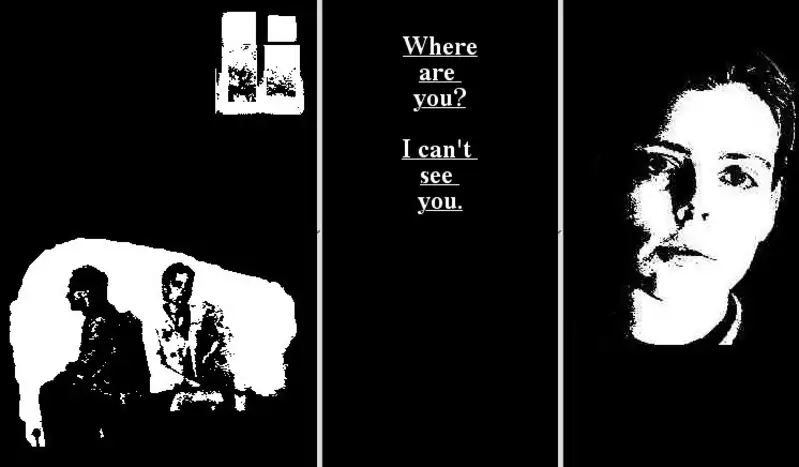
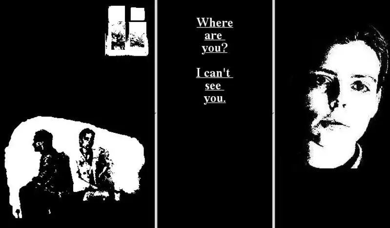

My Boyfriend Came Back from the War
 

A soft net art piece that toys with duality, perception, and meaning. The piece presents mirrored pairs of words and images, allowing the viewer to determine whether or not they are viewing something good or bad—half full or half empty. The use of repetition and symmetry in the piece highlights the manner in which slight differences in framing make all the difference in one's perception of the same thing or concept. The interactive element—dissolving from paired images or words—pursues the viewer to an active role. The interaction creates solitary contemplation and close and reflective experience. The interactive interface amplifies the emotional effect because the audience needs to decide actively where the story is headed. The engagement generates a stronger sense of familiarity and leads the viewer to feel as if they are reconstructing an intimate and intimate moment.